pacman::p_load(ggthemes, plotly, ggstatsplot, treemap, htmltools, d3treeR, ggridges, tidyverse, lubridate, fpp3, patchwork)Prototyping: GeBIZ High Level Data
Overview
This page of prototypes will be for exploring the codes for the plots in the General Economic Visualisation module of our Shiny Application.
Specifically, I will be looking at time series analysis, and building treemaps, besides taking a look at ridgeplots.
Loading Data and Packages
dataset <- read_csv("data/procurement_with_ministry.csv")
ministry_mapping <- read_csv("data/agency_mapping (1).csv")
ministry_mapping <- ministry_mapping %>%
select(ministry, ministry_abbr) %>%
distinct(ministry, .keep_all = TRUE)
procurement <- dataset %>%
left_join(ministry_mapping, by = "ministry")glimpse(procurement)Rows: 18,638
Columns: 9
$ tender_no <chr> "ACR000ETT18300010", "ACR000ETT18300011", "ACR000…
$ tender_description <chr> "SUPPLY, DESIGN, DEVELOPMENT, CUSTOMIZATION, DELI…
$ agency <chr> "Accounting And Corporate Regulatory Authority", …
$ award_date <chr> "11/06/2019", "10/05/2019", "30/04/2019", "29/08/…
$ tender_detail_status <chr> "Awarded to Suppliers", "Awarded to No Suppliers"…
$ supplier_name <chr> "AZAAS PTE. LTD.", "Unknown", "ACCENTURE SG SERVI…
$ awarded_amt <dbl> 2305880.0, 0.0, 2035000.0, 30700373.9, 178800.0, …
$ ministry <chr> "MINISTRY OF FINANCE", "MINISTRY OF FINANCE", "MI…
$ ministry_abbr <chr> "MOF", "MOF", "MOF", "MOF", "MOF", "MOF", "MOF", …The “character” data type for the award date needs to be changed to “date” type, which we do using lubridate’s dmy function
procurement <- procurement %>%
mutate(award_date = dmy(award_date)) Group the ministry data by ministry and then by agency names.
ministries <- procurement %>%
distinct(ministry)
agencies <- procurement %>%
distinct(agency, ministry)Point Measures
Get percentage of tenders awarded
number_awarded <- procurement %>%
filter(tender_detail_status != "Awarded to No Suppliers")
cat("Percentage of tenders awarded: ", nrow(number_awarded) / nrow(procurement) * 100, "%")Percentage of tenders awarded: 95.79891 %cat("\nAverage tender value: S$ ", sum(number_awarded$awarded_amt, na.rm = FALSE)/nrow(procurement))
Average tender value: S$ 5539801Compute Yearly Averages
procurement$award_year <- year(procurement$award_date)
procurement_fullyears <- procurement %>%
filter(award_year >= 2020 & award_year <= 2023,
tender_detail_status != "Awarded to No Suppliers")
total_award <- sum(procurement_fullyears$awarded_amt, na.rm = TRUE)
total_tenders <- nrow(procurement_fullyears)
years_count <- n_distinct(procurement_fullyears$award_year)
ministries_count <- n_distinct(procurement_fullyears$ministry)
annual_gov_award <- total_award / years_count
annual_ministry_award <- annual_gov_award / ministries_count
annual_gov_tenders <- round(total_tenders / years_count)
annual_ministry_tenders <- round(annual_gov_tenders / ministries_count)
cat("Amount Awarded Yearly: S$ ", annual_gov_award/1000000, " mil")Amount Awarded Yearly: S$ 20137.48 milcat("\nAverage Awarded Yearly per Ministry/Organ of State: S$ ", round(annual_ministry_award/1000000, 2), " mil")
Average Awarded Yearly per Ministry/Organ of State: S$ 839.06 milcat("\nTenders Awarded Yearly: ", annual_gov_tenders)
Tenders Awarded Yearly: 3499cat("\nTenders Awarded Yearly per Ministry/Organ of State: ", annual_ministry_tenders)
Tenders Awarded Yearly per Ministry/Organ of State: 146Bar graphs
Get the top 5 ministries which spent the most across the dataset
all_award <- sum(procurement$awarded_amt, na.rm = TRUE)
top_ministries_award <- procurement %>%
group_by(ministry) %>%
summarise(
total_award = sum(awarded_amt, na.rm = TRUE)
) %>%
arrange(desc(total_award)) %>%
slice_head(n = 5) %>%
mutate(
ministry = factor(ministry, levels = ministry),
cum_pct = cumsum(total_award) / all_award * 100
)Plot the bar graphs showing the top 5 ministries which spent the most
ggplot(top_ministries_award, aes(x = ministry)) +
geom_bar(aes(y = total_award), stat = "identity", fill = "darkblue") +
geom_line(aes(y = cum_pct * max(total_award) / 100, group = 1), color = "orange", linewidth = 1.2) +
geom_point(aes(y = cum_pct * max(total_award) / 100), color = "orange", size = 2) +
scale_y_continuous(
name = "Total Award Amount (SGD)",
sec.axis = sec_axis(~ . * 100 / max(top_ministries_award$total_award), name = "Cumulative %")
) +
labs(
title = "Top 5 Ministries by Total Award (2020–2023)",
x = "Ministry"
) +
theme_minimal() +
theme(axis.text.x = element_text(size = 6, angle = 45, hjust = 1))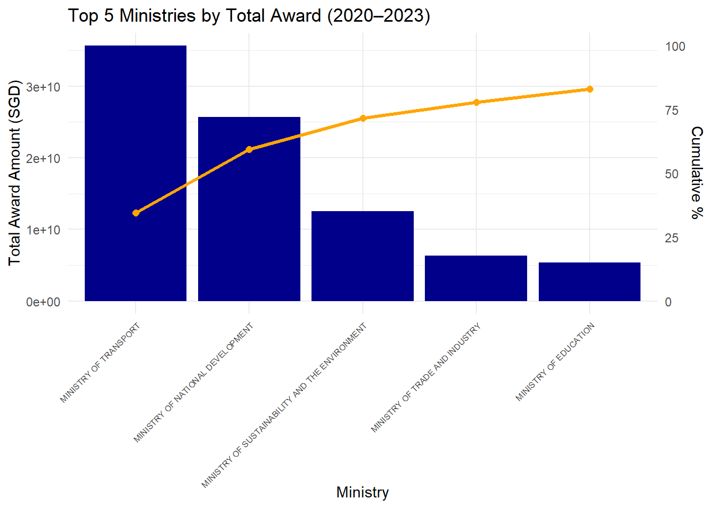
Attempt to have the x labels as the ministry_abbr, and have the plot as an interactive one.
top_ministries_award <- top_ministries_award %>%
left_join(ministry_mapping, by = "ministry") %>%
mutate(ministry_abbr = factor(ministry_abbr, levels = ministry_abbr[order(-total_award)]))top_ministries_award$bar_tooltip <- paste0(
top_ministries_award$ministry, "\n",
"Total Award: $", round(top_ministries_award$total_award / 1e9, 2), " bil"
)
top_ministries_award$point_tooltip <- paste0(
top_ministries_award$ministry, "\n",
"Cumulative Share: ", round(top_ministries_award$cum_pct, 1), "%"
)
p1 <- ggplot(top_ministries_award, aes(x = factor(ministry_abbr))) +
geom_bar(aes(y = total_award, text = bar_tooltip), stat = "identity", fill = "darkblue") +
geom_line(aes(y = cum_pct * max(total_award) / 100, group = 1), color = "orange", linewidth = 1.2) +
geom_point(aes(y = cum_pct * max(total_award) / 100, text = point_tooltip), color = "orange", size = 2) +
scale_y_continuous(
name = "Total Award Amount (SGD)",
labels = function(x) paste0(x / 1e9, "bil")
) +
labs(
title = "Top 5 Ministries by Total Award Amount",
x = ""
) +
theme_minimal() +
theme(axis.text.x = element_text(size = 10))
ggplotly(p1, tooltip = "text")We do the same for number of tenders awarded, but now increase to the top-10 ministries to account for roughly the same proportion of ~83%.
all_tenders <- nrow(procurement)
top_ministries_tenders <- procurement %>%
group_by(ministry) %>%
summarise(
tender_count = n()
) %>%
arrange(desc(tender_count)) %>%
slice_head(n = 10) %>%
mutate(
ministry = factor(ministry, levels = ministry),
cum_pct = cumsum(tender_count) / all_tenders * 100
)
top_ministries_tenders <- top_ministries_tenders %>%
left_join(ministry_mapping, by = "ministry") %>%
mutate(ministry_abbr = factor(ministry_abbr, levels = ministry_abbr[order(-tender_count)]))top_ministries_tenders$bar_tooltip <- paste0(
top_ministries_tenders$ministry, "\n",
"Number of Tenders: ", top_ministries_tenders$tender_count
)
top_ministries_tenders$point_tooltip <- paste0(
top_ministries_tenders$ministry, "\n",
"Cumulative Proportion: ", round(top_ministries_tenders$cum_pct, 1), "%"
)
p2 <- ggplot(top_ministries_tenders, aes(x = factor(ministry_abbr))) +
geom_bar(aes(y = tender_count, text = bar_tooltip), stat = "identity", fill = "darkblue") +
geom_line(aes(y = cum_pct * max(tender_count) / 100, group = 1), color = "orange", linewidth = 1.2) +
geom_point(aes(y = cum_pct * max(tender_count) / 100, text = point_tooltip), color = "orange", size = 2) +
scale_y_continuous(
name = "Number of Tenders"
) +
labs(
title = "Top 10 Ministries by Number of Tenders",
x = ""
) +
theme_minimal() +
theme(axis.text.x = element_text(size = 10))
ggplotly(p2, tooltip = "text")Ridegeline Plot
We visualise ridgeline plots to reveal the distribution of tender awards within each ministry’s agencies
# choice <- menu(ministries$ministry, title = "Select a ministry:")
# selected_ministry <- ministries$ministry[choice]
selected_ministry <- "MINISTRY OF TRANSPORT"
ministry_subset <- procurement %>% filter(ministry == selected_ministry)
# Plot ridgeplot
ggplot(ministry_subset, aes(x = awarded_amt, y = agency, fill = agency)) +
geom_density_ridges(
quantile_lines = TRUE,
quantiles = c(0.25, 0.5, 0.75),
scale = 1.2,
alpha = 0.7,
bandwidth = 1e4, # try adjusting: 1e5, 5e5, etc.
) +
labs(
title = paste("Award Amount Distribution by Agency for", selected_ministry),
x = "Award Amount",
y = "Agency"
) +
theme_ridges() +
theme(plot.title = element_text(size = 12), axis.text.y = element_text(size = 8), legend.position = "none")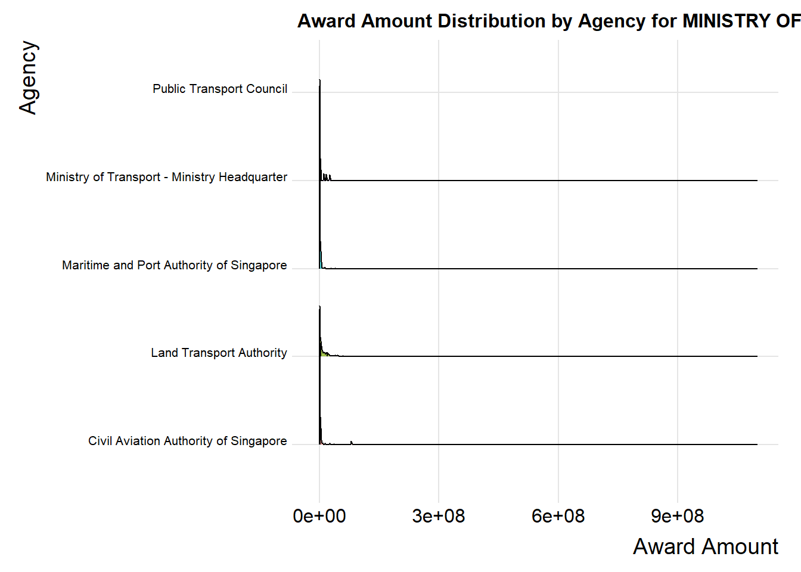
The large range of the awarded amounts results in a highly skewed distribution where most data is concentrated near zero. This skews the density estimation, compressing the ridgelines toward the left and making it difficult to visually distinguish the differences between agencies without appropriate scaling or transformation.
selected_ministry <- "MINISTRY OF TRANSPORT"
ministry_subset <- procurement %>% filter(ministry == selected_ministry)ggplot(ministry_subset, aes(x = awarded_amt, y = agency)) +
stat_density_ridges(
geom = "density_ridges",
fill = "blue",
quantile_lines = TRUE,
quantiles = c(0.25, 0.5, 0.75),
scale = 1.2,
alpha = 0.7
) +
coord_cartesian(xlim = c(0, quantile(ministry_subset$awarded_amt, 0.83, na.rm = TRUE))) +
labs(
title = paste("Award Amount Distribution by Agency for", selected_ministry),
x = "Award Amount",
y = "Agency"
) +
theme_ridges() +
theme(plot.title = element_text(size = 12), axis.text.y = element_text(size = 8), legend.position = "none")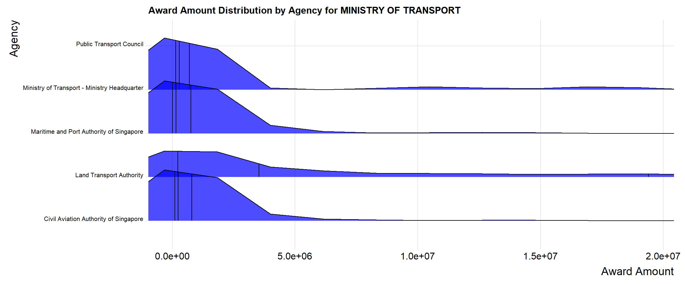
ggplot(ministry_subset, aes(x = "Agencies", y = awarded_amt, fill = agency)) +
geom_violin(trim = FALSE, alpha = 0.7) +
geom_boxplot(width = 0.1, outlier.shape = NA, alpha = 0.5,
position = position_dodge(width = 0.9)) +
stat_summary(fun = median, geom = "point", shape = 21, size = 2, fill = "white") +
coord_cartesian(ylim = c(0, quantile(ministry_subset$awarded_amt, 0.83, na.rm = TRUE))) +
theme_minimal() +
theme(
axis.title.x = element_blank(),
axis.text.x = element_blank(),
axis.ticks.x = element_blank(),
legend.title = element_text(size = 10),
legend.text = element_text(size = 9),
plot.title = element_text(size = 12)
) +
labs(
title = paste("Award Amount Distribution by Agency for", selected_ministry),
x = "Agency",
y = "Award Amount"
)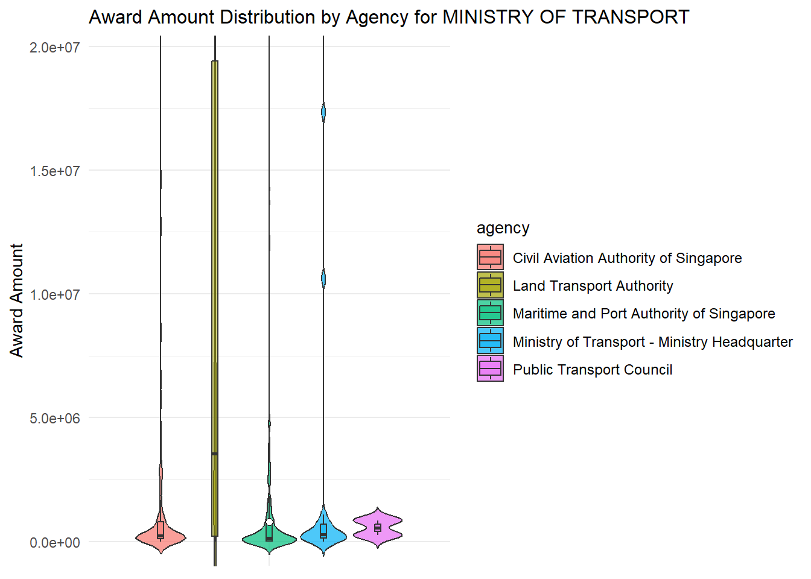
ministry_subset_log <- ministry_subset %>%
mutate(log_award = log10(awarded_amt))ggbetweenstats(
data = ministry_subset_log,
x = agency,
y = awarded_amt,
type = "nonparametric", # Uses Kruskal-Wallis (good for skewed data)
messages = FALSE,
pairwise.comparisons = TRUE,
pairwise.display = "significant", # Show only sig pairwise tests
outlier.tagging = TRUE,
outlier.label = tender_no, # Optional: label outlier points
xlab = "Agency",
ylab = "Award Amount",
title = paste("Comparison of Award Amounts by Agency for", selected_ministry),
results.subtitle = TRUE
)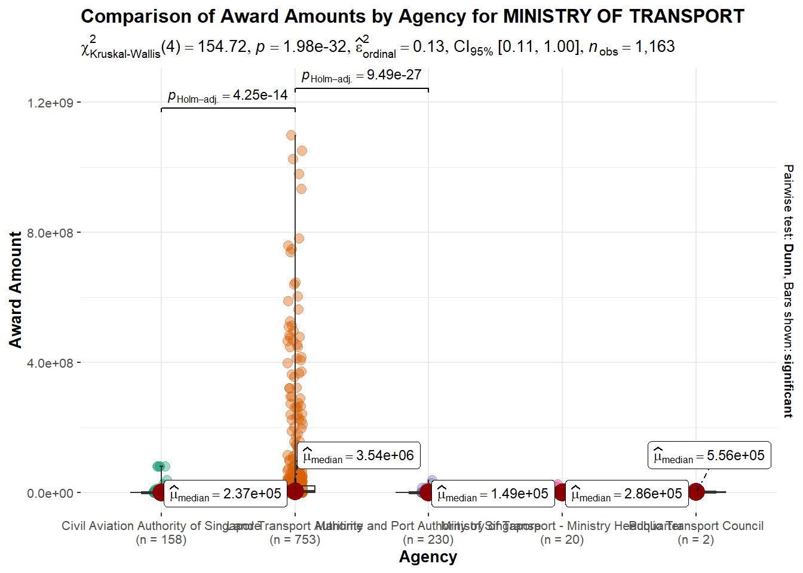
Kruskal-Wallis Test (ANOVA)
Test whether the distributions across agencies (or any group) are statistically different
ANOVA <- kruskal.test(awarded_amt ~ agency, data = ministry_subset)
ANOVA
Kruskal-Wallis rank sum test
data: awarded_amt by agency
Kruskal-Wallis chi-squared = 154.72, df = 4, p-value < 2.2e-16ANOVA$p.value[1] 1.977267e-32Treemaps
Plot a treemap to provide a visual summary of procurement activity across government ministries and their respective agencies. The size of each agency’s rectangle reflects the total value of awards granted to that agency, while the color intensity of each block corresponds to the number of tenders issued by the agency.
summary_data <- procurement %>%
group_by(ministry, agency) %>%
summarise(
total_award = sum(awarded_amt, na.rm = TRUE),
tender_count = n()
)
summary_data <- summary_data %>%
left_join(ministry_mapping, by = "ministry")
# Plot treemap
treemap(
summary_data,
index = c("ministry_abbr", "agency"),
vSize = "total_award",
vColor = "tender_count",
type = "value",
palette = "Blues",
title = "Procurement Treemap by Ministry and Agency",
title.legend = "Number of Tenders",
fontsize.labels = c(10, 10),
fontcolor.labels = c("white", "black"),
border.col = "white"
)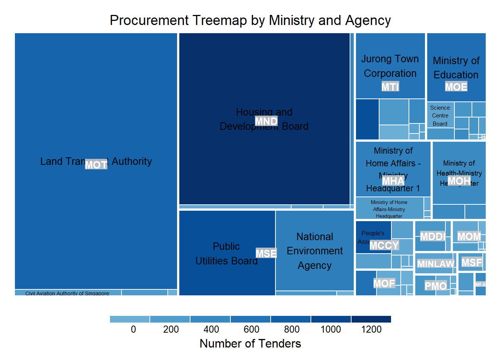
The level of detail is not present, so make the treemap interactive. We have one extra step of making the names XML-safe, or an error xmlParseEntityRef: no name will appear for special characters e.g. ampersands “&”
summary_data$agency <- htmlEscape(summary_data$agency)
tm <- treemap(
summary_data,
index = c("ministry_abbr", "agency"),
vSize = "total_award",
vColor = "tender_count",
type = "value",
palette = "Blues",
title = "Procurement Treemap by Ministry and Agency",
title.legend = "Number of Tenders",
fontsize.labels = c(10, 10),
fontcolor.labels = c("white", "black"),
border.col = "white"
)
d3tree(tm, rootname = "Government of Singapore")

Time Series
Write a function for plotting custom time series data
# Function to plot time series graph
plot_ts <- function(ydat, y, ministry = NULL){
p <- ydat %>% autoplot({{y}}) + theme_minimal() + labs(title = paste("Ministry:", ministry), x="") +
theme(axis.title.y=element_text(size=7, angle=0, vjust=0.5),
axis.text=element_text(size=6, angle=0, vjust=0.5))
p
}procurement_total <- procurement %>%
group_by(award_date) %>%
summarise(total_award = sum(awarded_amt, na.rm = TRUE)) %>%
as_tsibble(index = award_date)
plot_ts(procurement_total, total_award, "All Ministries")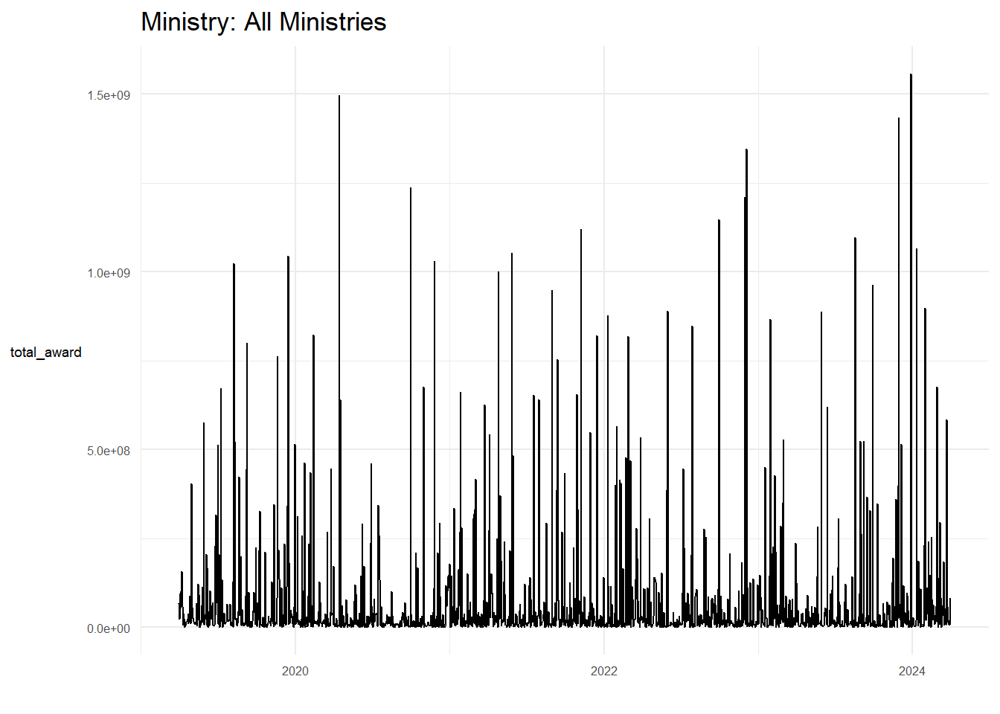
The data is has a very large range, and its recurrent sharp vertical lines reflects the noise in the data. It’s daily granularity makes it hard to see any pattern or to tell trends. The non-regularity of daily data also presents problems.
Here, an attempt is made to group the data into monthly aggregates, and try to plot the time-series again.
procurement_total <- procurement %>%
mutate(month = yearmonth(award_date)) %>%
group_by(month) %>%
summarise(total_award = sum(awarded_amt, na.rm = TRUE)) %>%
as_tsibble(index = month)
plot_ts(procurement_total, total_award, "All Ministries")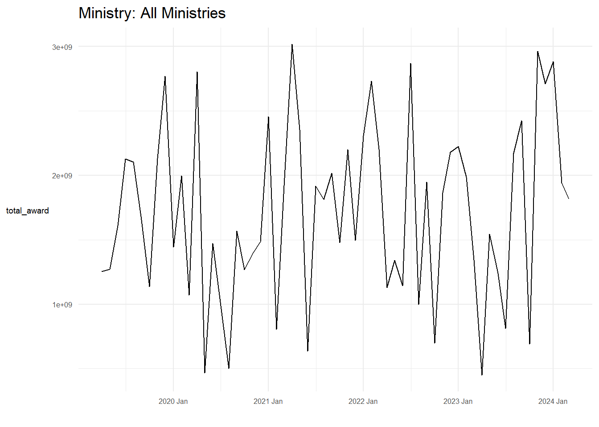
procurement %>%
mutate(month = yearmonth(award_date)) %>%
group_by(month) %>%
summarise(total_award = sum(awarded_amt, na.rm = TRUE)) %>%
ggplot(aes(x = month, y = total_award)) +
geom_line() +
labs(title = "Monthly Procurement Awards",
x = "Month", y = "Total Awarded Amount") +
theme_minimal()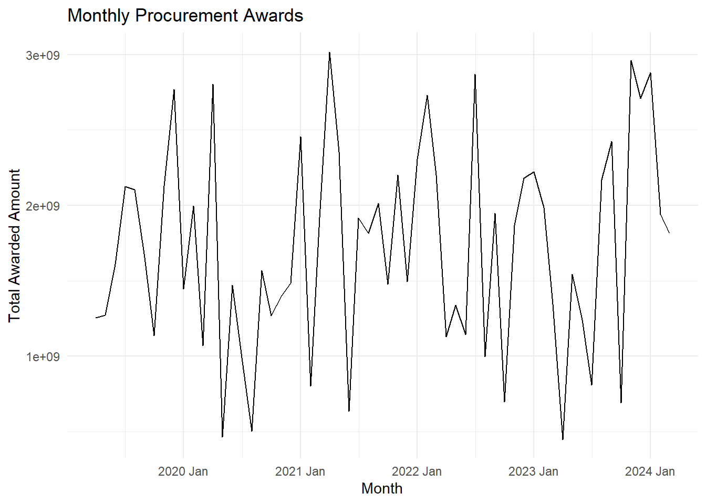
This looks better, which allows us to fit a ARIMA model
mdls <- procurement_total %>%
model(
search_bic = ARIMA(total_award, ic="bic"),
search_aic = ARIMA(total_award, ic="aic")
)
mdls %>% select(search_aic) %>% report()Series: total_award
Model: ARIMA(0,0,0) w/ mean
Coefficients:
constant
1720846940
s.e. 91158976
sigma^2 estimated as 4.707e+17: log likelihood=-1305.42
AIC=2614.84 AICc=2615.05 BIC=2619.03mdls %>% select(search_bic) %>% report()Series: total_award
Model: ARIMA(0,0,0) w/ mean
Coefficients:
constant
1720846940
s.e. 91158976
sigma^2 estimated as 4.707e+17: log likelihood=-1305.42
AIC=2614.84 AICc=2615.05 BIC=2619.03selected_ministry <- "MINISTRY OF TRANSPORT"
ministry_total <- procurement %>%
filter(ministry == selected_ministry) %>%
mutate(month = yearmonth(award_date)) %>%
group_by(month) %>%
summarise(total_award = sum(awarded_amt, na.rm = TRUE)) %>%
as_tsibble(index = month) %>%
fill_gaps(total_award = 0)
plot_ts(ministry_total, total_award, selected_ministry)
if (nrow(ministry_total) > 1){
mdls <- ministry_total %>%
model(
search_bic = ARIMA(total_award, ic="bic"),
search_aic = ARIMA(total_award, ic="aic")
)
mdls %>% select(search_aic) %>% report()
mdls %>% select(search_bic) %>% report()
} else {
print("Not enough data to fit a time-series")
}Series: total_award
Model: ARIMA(0,0,0) w/ mean
Coefficients:
constant
594410017
s.e. 53556888
sigma^2 estimated as 2.243e+17: log likelihood=-1283.19
AIC=2570.37 AICc=2570.58 BIC=2574.56
Series: total_award
Model: ARIMA(0,0,0) w/ mean
Coefficients:
constant
594410017
s.e. 53556888
sigma^2 estimated as 2.243e+17: log likelihood=-1283.19
AIC=2570.37 AICc=2570.58 BIC=2574.56Ministry of National Development, Ministry of Defence, Ministry of Foreign Affairs, Ministry of Law, State Courts, Ministry of Finance are the ones that have non ARIMA(0,0,0) models
We try the simpler ETS models for more potential insights.
selected_ministry <- "MINISTRY OF TRANSPORT"
ministry_total <- procurement %>%
filter(ministry == selected_ministry) %>%
mutate(month = yearmonth(award_date)) %>%
group_by(month) %>%
summarise(total_award = sum(awarded_amt, na.rm = TRUE)) %>%
as_tsibble(index = month) %>%
fill_gaps(total_award = 0)
plot_ts(ministry_total, total_award, selected_ministry)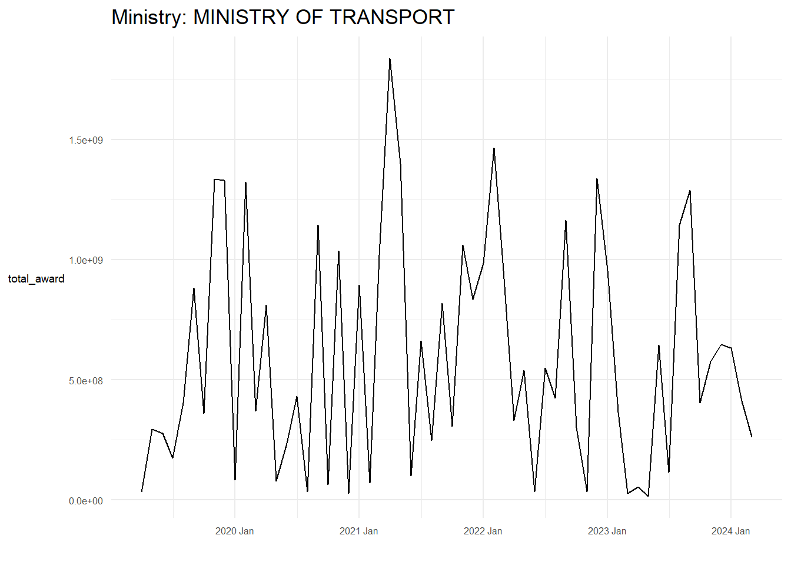
if (nrow(ministry_total) > 1){
mdls <- ministry_total %>%
model(
ets = ETS(total_award),
arima = ARIMA(total_award, ic="bic")
)
mdls %>% select(ets) %>% report()
} else {
print("Not enough data to fit a time-series")
}Series: total_award
Model: ETS(A,N,N)
Smoothing parameters:
alpha = 0.007845534
Initial states:
l[0]
517995200
sigma^2: 2.337524e+17
AIC AICc BIC
2649.209 2649.637 2655.492 ETS(A,N,N) confirms that the model is level and has no features to speak of.
fc <- mdls %>%
forecast(h = 6)
# Plot the forecast
fc %>%
autoplot(ministry_total) +
labs(
title = paste("Forecast for", selected_ministry),
y = "Awarded Amount",
x = "Month"
) +
theme_minimal()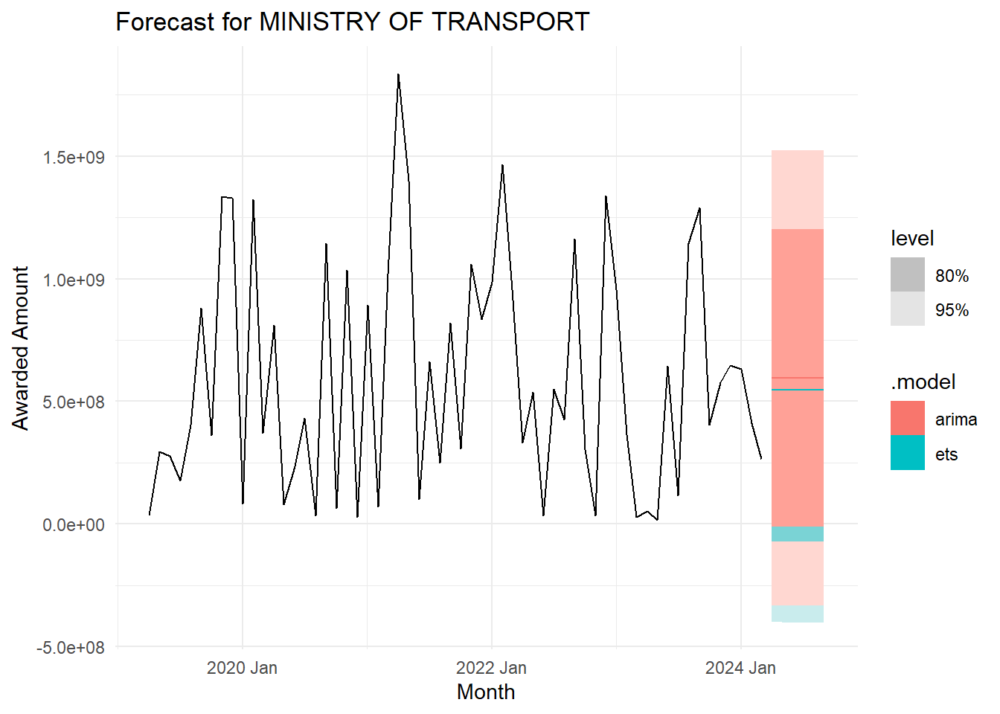